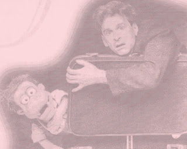

Reader Comment
5/18/2011
I truly enjoy hearing "voices from the past" such as happened to us again recently. John Pattison first contacted Maher Studios in the early '70's and took the Maher Course as a pre-teen. After several years of regular contact he dropped off our radar. But last week it was a pleasant surprise to hear from John again and get caught up a bit on his vent and puppet career. Among other things, John wrote:
{kind=link}

"I have not seen you in many years but I wanted you to know that I'm alive and well and busy up here in Canada. I'm a writer producer of television up here, and I don't know if you know that I spent a number of years working with Jim Henson on the Fraggle Rock series in the '80's. I have since gone on to do quite a few other projects.
"I'm doing a small theater show this summer where I talk about my career as a puppeteer/ventriloquist/performer, and how I got started doing this some 40 years ago - which is why I was thinking about you. I still have all the letters you sent me and as I went through them the other day it brought back a lot of memories. I really do owe you a big thank you for your generous help and patience in getting me started so long ago. I was very lucky to have you as a coach. It was a long time ago and it's hard to believe I'm still at it."
Well, John, it's hard to believe we're still at it, too! Thanks for your encouraging words - you made our day!